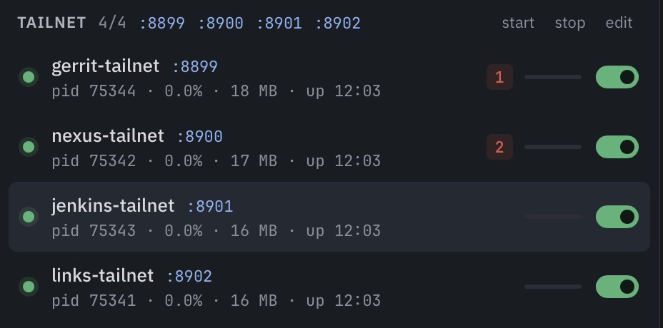

Extending the Tail
The Couch computing saga: 1. One More Hop · 2. A Hoarder's Dream · 3. The couch group · 4. Extending the Tail
An AI had submitted code for review. I was on the couch with my iPad and wanted to review it there. The review tool only works from my desk — it sits behind the company's private network, and only my Mac knows the way in. I could walk to the desk. Or I could pick up a recipe I'd left in my notes three months ago.
I left myself breadcrumbs
Back in July I'd proved one thing: my iPad can reach a service that only my Mac can open, if there's a relay in between. Tailscale — the private tunnel that connects my devices — runs beside the operating system rather than inside it. It can't use the work VPN — the private connection that lets my Mac into the company network. But a relay sitting on the Mac can. It takes the request from Tailscale, carries it through the VPN, and hands back the answer.
I'd documented all of this in a file in my vault. Why the relay is needed, what I'd tried, sample code that worked. I hadn't turned it into a proper script. The notes sat there for three months, waiting. Today I had a reason: a code review on the couch.
We picked up where we left off
I pointed Claude at those notes and said: make this a script for Gerrit, the code review tool. Claude read the documentation, wrote the script, ran it.
The relay connected. But instead of showing an error or leaving me waiting, it sent me to the wrong address. The relay from my notes was too simple. It passed data along without reading it, and the work services needed more than the test service I'd tried in July. The relay was the right idea. This one wasn't up to the job.
Get it to work, then get it right
Claude replaced the raw pipe with a proper proxy. Same idea: sit between Tailscale and the VPN. But instead of passing bytes blindly, it speaks HTTP. It rewrites the name on the request to the site's real name, makes the VPN hop, and rewrites the response back to the tailnet address. One Python script, nothing beyond the standard library.
In the previous post I'd set up a dashboard called devboard to manage all my local services — start, stop, see what's running. I wanted the new proxy in there immediately, so I could watch the green dot appear while Claude was still working on it. Claude registered the service, the dot turned green, and devboard printed a link. I tapped it on the iPad. Gerrit loaded. The code review was right there.
One down, and then three more
"Can you add Nexus and Jenkins?" Nexus stores our builds; Jenkins runs our deployments. Same setup — all three sites live at the same internal address. One copy of the script per name, one command each. Then I asked for the internal links page, a different server but the same pattern.
I got all four services running in the time it took to fix the first one. Three of them just worked. Jenkins sent me from page to page five times and landed on a white screen.
Single sign-out
Claude pointed me at the login page instead.
I tried the credentials I had stored. None of them went through. The company had moved to single sign-on — one shared company login across all work tools — since I'd last logged in from outside the office. My old username-and-password pair was dead.
Single sign-on can't survive the proxy. When you click "log in," Jenkins redirects you to the company login and tells it: when you're done, send the user back to the real Jenkins address. No proxy trick changes it — it would bounce me right back to the blank page I'd already seen.
Claude remembered another way into Jenkins: an automation token — a digital key our scripts use to check our builds. It verified that the same key works for the website too. So we made the login configurable: the script sends the key with every request. No login required.
I tapped back to my browser. I didn't even have to reload the page. The dashboard was there. I was logged in as myself. Magical.
All four dots green

Four services, managed from the dashboardFour green dots in the dashboard from five days ago. I extended the project and added a devboard command to start all four at once. Gerrit for reviewing code, Nexus for builds, Jenkins for deployments, and the internal links page for finding things. All reachable from the iPad, through my Mac that stays awake at home.
I'd had a recipe for opening one door. It sat in my notes for three months. Today I handed those notes to an AI and said: make it real.
Now I can access it from anywhere.